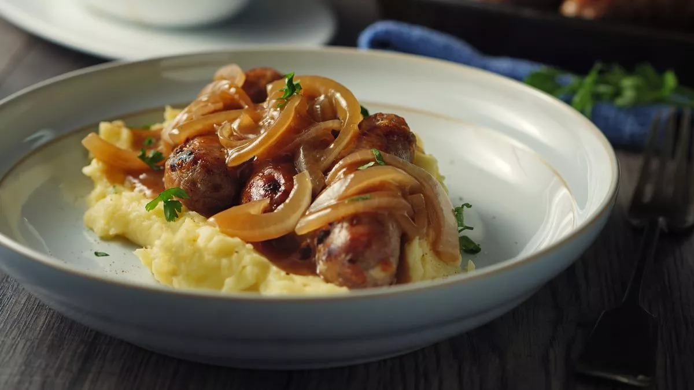

приготовление:
-
Очистить 4 крупных или 6 средних картофелин и отварить в подсоленной воде до готовности.
-
Разогреть духовку до 160 °C. Обжарить 1 упаковку растительных колбасок весом 270 г на сковороде с небольшим количеством оливкового масла, 2 раздавленными зубчиками чеснока и розмарином в течение нескольких минут до румяной корочки. Добавить несколько кусочков сливочного масла и полить колбаски растопленным ароматным маслом. Переложить в форму и довести до готовности в духовке около 15 минут.
-
Для лукового соуса очистить 2 красные луковицы и тонко нарезать полукольцами. Обжаривать на сковороде с оливковым маслом около 5 минут, периодически помешивая. Добавить 2 ч. л. сахара, щепотку соли и несколько кусочков сливочного масла. Увеличить огонь почти до максимального, влить 2 ст. л. бальзамического уксуса и 2 ст. л. вустерширского соуса. Карамелизовать, помешивая, ещё несколько минут. Влить 100–150 мл говяжьего бульона, чтобы он почти покрывал лук, уменьшить огонь до среднего и готовить ещё около 10 минут.
-
С готового картофеля полностью слить воду и вернуть кастрюлю на средний огонь. Размять картофель, продолжая помешивать, чтобы испарилась лишняя влага. Влить 1 ст. л. оливкового масла, перемешивать ещё около минуты, затем приправить копчёной солью. Добавить 1 ч. л. зернистой горчицы и 20 г мелко нарезанного шнитт-лука, всё хорошо перемешать.
-
Выложить на тарелки слой пюре, сверху положить колбаски и полить луковым соусом.